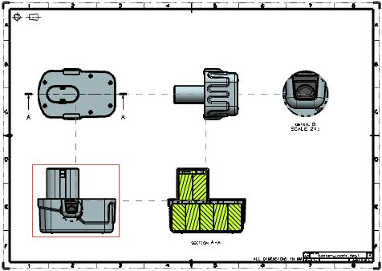

Associative view alignment
What is it?
Use the View Alignment command to add permanent, associative alignments between existing views, including Section views, or edit existing associative alignments The alignment is enforced even when views change or move. An associative alignment between views is indicated by a dashed line when a view is highlighted or selected.

Use the new Associative Alignment check box to permanently align a view with another view when placing it on a drawing. The check box is available for all supported views, except section views, when the placement method is not set to Inferred.
The Associative Alignment customer default sets the default value for the Associative check box.
Why should I use it?
Use associative alignments to make sure that views remain properly aligned on the drawing sheet after model modifications or view boundary changes.
Where do I find it?
Associative alignment in view commands
|
Application |
Drafting |
|
Prerequisite |
The placement method must not be set to Infer. |
|
Toolbar |
Drawing→Base View Drawing→Add View Drop-down list→Base View |
|
Menu |
Insert→View→Base or Drawing or Projected or Detail or Standard Views |
|
Shortcut Menu |
Right–click a drawing sheet border→Add Base View or Add Drawing View or Add Projected View or Add Detail View or Add Standard Views |
|
Part Navigator |
Right–click a sheet node→Add Base View or Add Drawing View or Add Projected View or Add Detail View or Add Standard Views |
|
Location in dialog box |
Placement subgroup→Associative Alignment |
Associative alignment in View Creation Wizard
|
Application |
Drafting |
|
Toolbar |
View Creation Wizard |
|
Menu |
Insert→View Creation Wizard |
|
Location in dialog box |
Layout page→Placement subgroup→Associative Alignment |
View Alignment command
|
Application |
Drafting |
|
Menu |
Edit→View→Alignment |
|
Graphics window |
Right-click view border→View Alignment |
|
Part Navigator |
Right-click the view node→View Alignment |
Associative Alignment customer default
|
Menu |
File→Utilities→Customer Default |
|
Location in dialog box |
Drafting→General→View tab→Associative Alignment |